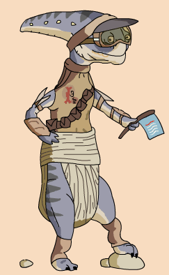

| Nick name | Little Scrapper |
| Classification | Aleena |
| Gender | Male |
| Height | 2'7'' |
| Home World | Aleen |
| Podracer | Vokoff-Strood Titan 2150 "Scatalpen" |
Ratts was the shortest podracer to enter the Boonta Eve Classic, earning him the nickname "Little Scrapper." Considered a gentleman on the track, Ratts rarely took the offensive. He was often seen as a bully to outsiders, though most of his fellow racers liked him. He came to Tatooine with his family, including his wife who had another child just prior to the Boonta. His kids were Deland, Doby, and Djulla. Ratts became frustrated with Sebulba's cheating and decided to have his own pod fitted with illegal equipment in order to take down Sebulba. He named his pod the Scatalpen after a creature from Aleen that slashes open the belly of its prey, causing it to trip on its own entrails. Within Laguna Caves on the first lap, Ratts Tyerell's accelerator jammed. He crashed into a stalactite and exploded in a huge ball of flames.
Many fans have been confused on whether or not Ratts survived because some people thought that a pit droid on a stretcher was actually Ratts. The text commentary on the DVD ROM confirmed that it was just a pit droid, probably DUM-4 who was sucked into Ody Mandrell's engine.
{kind=link}